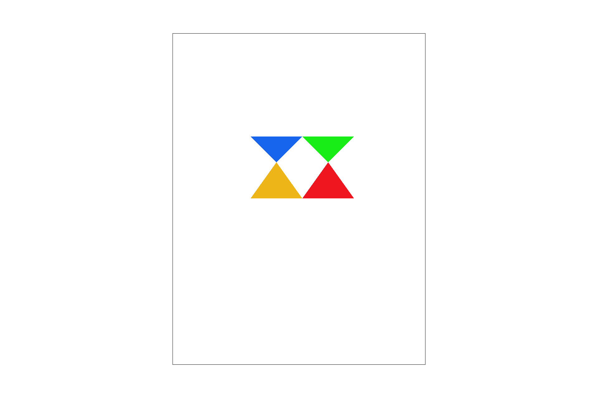
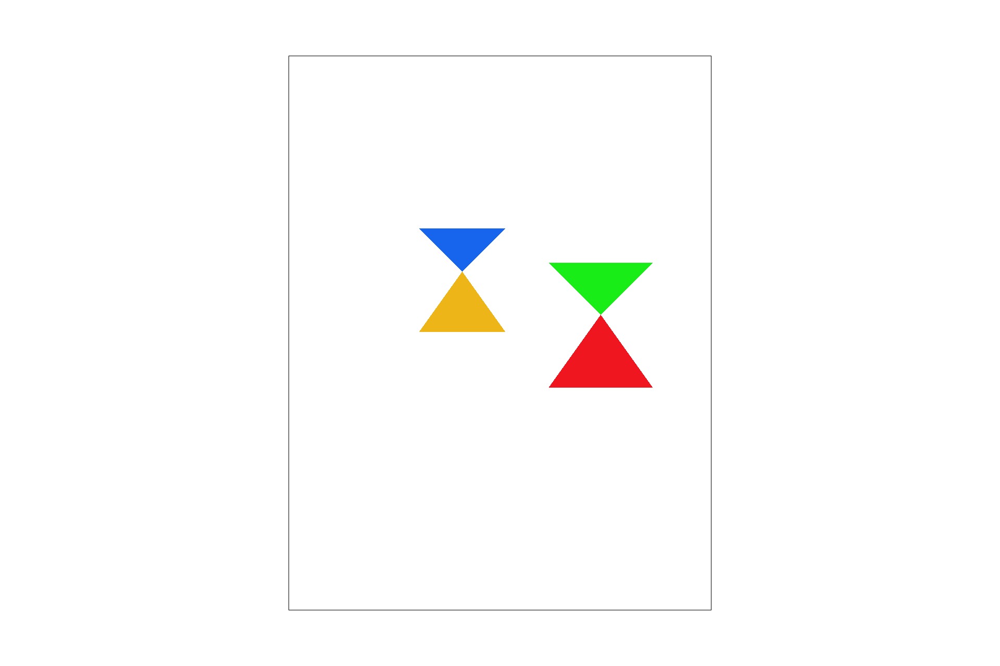
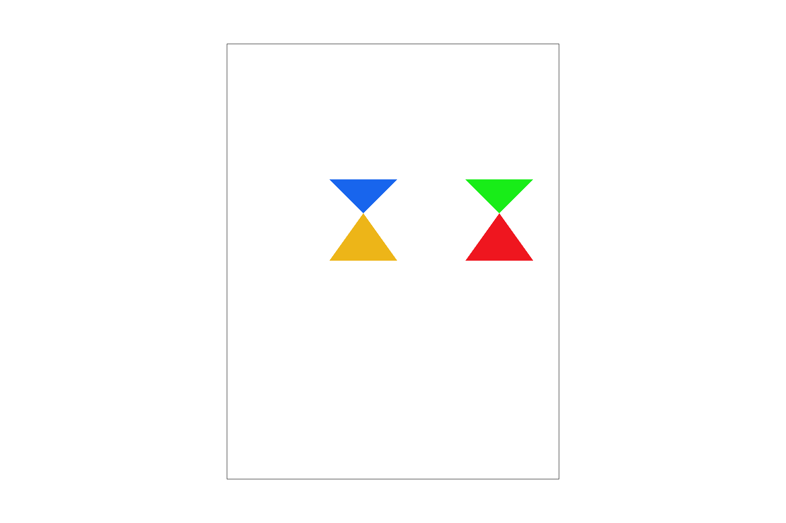

Part 4: Transforms
For the transforms, I implemented the matrices that we discussed in lecture. To test them, I have a grouping of the following form and performed transformations on this grouping.
<g>
<polygon fill="#1865ED" points="200,250 150,200 250,200"/>
<polygon fill="#EDB518" points="200,250 150,320 250,320"/>
<g>
<polygon fill="#18ED18" points="300,250 250,200 350,200"/>
<polygon fill="#EF161F" points="300,250 250,320 350,320"/>
</g>
</g>
Put into words, there is a group surrounding the green and red triangles and another group surrounding the previous one as well as two additional blue and yellow triangles.

Part 4: Default image - no transforms.
Part 4: Scaled the outer group - Deliverable.

Part 4: Scaled the inner group - Deliverable.
Part 4: Rotated the inner group - Deliverable.

Part 4: Translated the inner group - Deliverable.
I only added zooming and scrolling functionality.
Part 4: Zoomed out on the default.
Scrolled after zooming out.